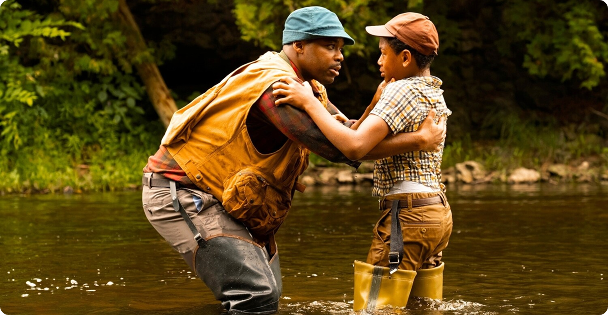
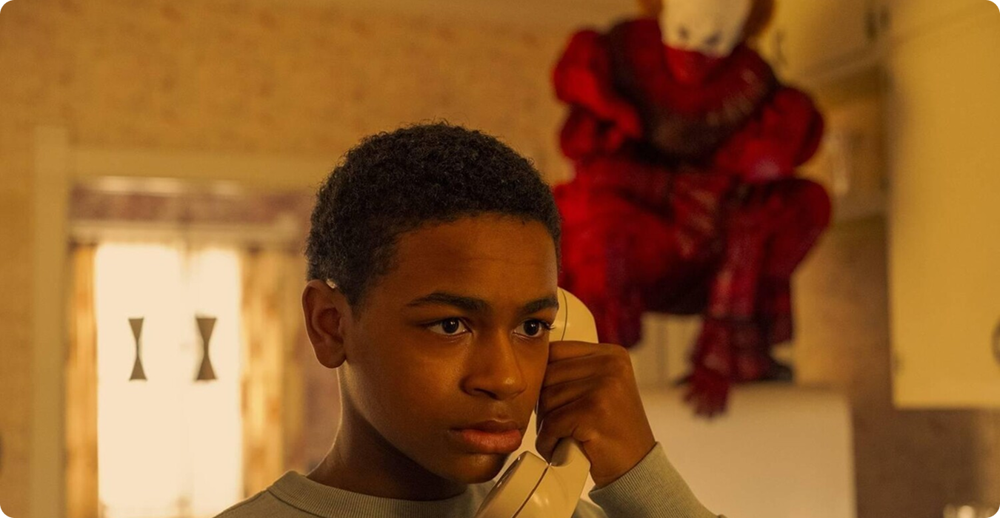
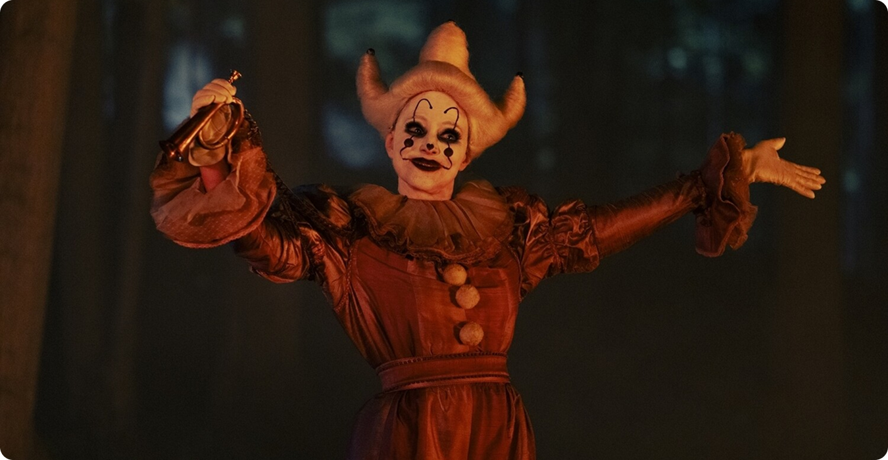

Травма, которая не проговаривается
Любая травма требует осмысления, иначе она не исчезает, а переходит в латентную форму. В Дерри этого не происходит. Трагедии не обсуждаются, насилие не становится предметом коллективного анализа, а страх вытесняется. Это приводит к нескольким последствиям:
- события не получают объяснения;
- жертвы остаются без признания;
- общество делает вид, что ничего не произошло.

Так формируется почва для повторения. Непрожитый опыт не исчезает — он возвращается.
Коллективная амнезия как защита
Город словно «забывает» происходящее. Эта амнезия выглядит как защитный механизм: проще игнорировать ужас, чем признать его частью реальности. Но именно это делает ситуацию опасной, поскольку само общество не фиксирует проблему и, следовательно, не передаёт опыт следующему поколению. Раз нет опыта, нет и способов защиты.

Общество таким образом оказывается обречено переживать одни и те же события снова. Память здесь заменяется удобным забыванием, которое временно снижает тревогу, но усиливает уязвимость.

Насилие как часть среды
Со временем зло перестаёт восприниматься как нечто исключительное. Оно становится фоном. Люди адаптируются к нему, начинают воспринимать его как «странности» города, а не как угрозу, требующую реакции.

Это особенно заметно в поведении взрослых. Они игнорируют тревожные мысли, закрывая глаза на проблему и избегая с ней прямого столкновения. А избегание в любом виде практически всегда влечёт за собой негативные последствия. Таким образом, среда сама начинает воспроизводить условия, в которых зло может существовать. Оно больше не выглядит чуждым — оно встроено в структуру города.

Почему цикл не прерывается
Главная причина повторяемости — отсутствие разрыва в системе. Чтобы цикл прекратился, необходимо:
- признать проблему;
- зафиксировать её в коллективной памяти;
- изменить поведение.
В Дерри этого не происходит. Каждый новый виток начинается с того же состояния: незнание, отрицание, уязвимость.
Сверхъестественное зло лишь использует эту ситуацию, но не создаёт её с нуля. Оно становится катализатором, а не единственной причиной.
Вывод
История Дерри показывает, что зло может быть не только внешней угрозой, но и следствием внутренних процессов общества. Пока травма остаётся непризнанной, она продолжает возвращаться.

Именно поэтому цикл не разрывается: не потому, что его невозможно остановить, а потому что никто по‑настоящему не пытается это сделать.